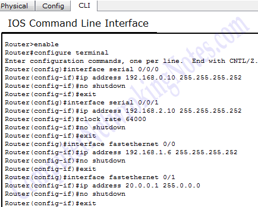

O que é um Protocolo OSPF?
Como dissemos anteriormente, o protocolo OSPF é um protocolo de roteamento no modelo dinâmico. De forma geral, podemos compará-lo com um GPS que observa as rotas para se chegar a um determinado destino e opta por aquela que será concluída em menor tempo ou sem trânsito. Assim, o protocolo OSPF consegue analisar, interpretar e registrar dados dos roteadores conectados a um servidor, para, posteriormente, escolher um melhor caminho para entregar os pacotes da rede. É considerado pertencente à classe dos protocolos de roteamento dinâmico. Todos os protocolos que priorizam a observação da quantidade de roteadores até chegada do destino são conhecidos como de vetor distância, como RIP, RIPv2 e EIGRP, enquanto os que priorizam chegar mais rápido de acordo com a banda são chamados de protocolos link state (estado de link), como o OSPF e IS-IS. Dessa forma, o Protocolo OSPF é aquele do tipo link state que, antes de tomar qualquer decisão, irá avaliar a topologia de todos os roteadores integrados aos seus processos, optando pela jornada mais curta para encaminhamento dos pacotes.
Como configurar ?
Para configurar o ospf é preciso que configure o endereço IP em R1 e R2, crie uma interface de loopback em ambos os roteadores e configure o endereço IP, habilite o OSPF e anuncie redes verifique a tabela de roteamento, o status de adjacência e o LSDB.
Exemplo:
